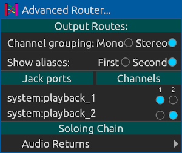

Rutas
Las rutas son la forma en que las pistas se conectan entre sí y con el mundo exterior. (También son la forma en que los puertos midi Jack se conectan al mundo exterior. Consulte la configuración del puerto midi)).
Cada pista tiene dos botones cuyos iconos parecen flechas. Un botón es para el enrutamiento de entrada y el otro es para el enrutamiento de salida. Al hacer clic en estos botones, aparecerá un menú de rutas de entrada o salida disponibles a las que puede conectarse. La mayoría de las pistas de audio enumeran otras pistas a las que conectarse, pero las pistas de entrada y salida de audio son especiales: los menús de enrutamiento de entrada de la pista de entrada de audio enumeran los puertos de entrada de audio Jack disponibles. Por el contrario, los menús de enrutamiento de salida de la pista de salida de audio enumeran los puertos de salida de audio Jack disponibles.

Por su parte, las pistas MIDI y de percusión le permiten enrutar los puertos y canales MIDI disponibles a la pista utilizando una matriz emergente como la siguiente:
Enrutamiento anti-circular
Cualquier elemento del menú de enrutamiento que pudiese causar una condición de enrutamiento circular está desalentado. Descubra si existe la condición examinando las rutas de enrutamiento involucradas y corrija la situación si es necesario.
Además, no se pueden utilizar los envíos auxiliares de una pista si la pista tiene una ruta de ruta de entrada desde CUALQUIER pista auxiliar. (Ver pistas auxiliares de audio). En ese caso, las perillas y etiquetas de envío auxiliar estarán deshabilitadas.
Rutas de cadena de solos
Las cadenas de solos (ver cadenas de solos) son rutas como cualquier otra. Las rutas de cadenas de solos (Soloing chain routes) disponibles se muestran en los menús emergentes de enrutamiento.